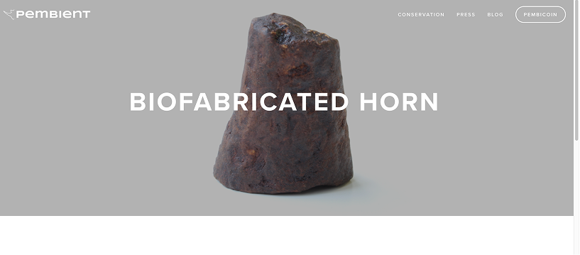
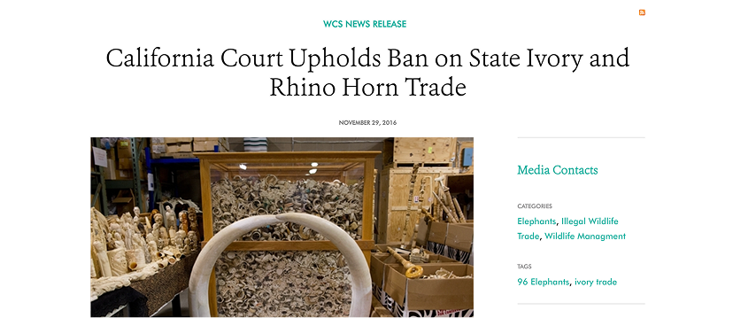

01 THE LIFE OF A RHINO
02 BEYOND THE RHINO


03 TRACING THE TRADE
The illegal trade of ivory and animal horns is a global problem.
Wildlife traffickers rely on intricate webs of transportation routes and logistics networks to smuggle goods from their place of origin to consumer markets, sometimes in distant countries.
Let’s take a look at some of these trade routes... ⤵
Where Illegal Wildlife Products Start Their Journey

People are reporting more exports than imports, pointing to signs of illegal trade.
Although CITES wildlife reports data from 1975 to 2023, the self-reported data around Importer reported amount and Exporter reported amounts varies wildly, sometimes off by thousands of units.

Exporter and Importer Quantities (1975-2023)
Sum of reported quantities

A surface view leads us to conclude that China is a major exporting country, and the US and Belgium are major importers.
While China is involved, there are other countries which slip under the radar.
Among the reported trade routes, these are most common trading routes in the dataset.
The top reported trade is between Great Britain and the US for a total of 624 occurances in the dataset.

Exporter to Importer Graph Network
You can explore it yourself! Hover over each node to highlight the trades that country makes.
04 A PERSISTENT PROBLEM
Why is this still such a big problem?
While international legislation does appear to decrease horn and tusk trafficking, so long as a consumer market still exists for these products, the trade network will never be completely eradicated. These animals are still very much at risk.
In the United States, one key piece of legislation was the Global Anti-Poaching Act.
This 2015 law was designed to protect wildlife by strengthening wildlife enforcement networks, identifying key wildlife trafficking countries, and increasing penalties of wildlife trafficking to be equivalent with other trafficking forms.
Despite legislation, border insecurities and corruption allow this trade to thrive.
Major discrepancies between reported exports and imports, where imported quantities far exceed what exporting countries report, suggest a breakdown in trade oversight. These gaps point to potential smuggling, underreporting, and informal trade routes.
Click each of the icons below to see the difference between reported import and export quantities for that animal, from 1975 - 2024.
05 WHAT THE MARKET IS DOING
Promoting ethical alternatives
Some companies have taken action by developing synthetic horns which are “lab-made”, like the company Pembient.
Passing legislation
States and countries are continuing to pass laws and monitor potential trade loopholes to deter poaching and trade.
06 WHAT YOU CAN DO
While poaching can feel like a far away problem, it’s not just the consumption of whole tusks and horns that we need to worry about.

You, too, could be an accidental consumer. Carvings were the second most traded objects year over year. Rhino horns and other kinds of tusks come in forms like carvings, jewelry, and even antique cups or other houseware items.
See anything familiar?
Smugglers commonly change the appearance of ivory or horns to trade, even embellishing common objects like a kettle.
Why you should donate your ivory
For future research!
For future research! "Relinquished items are used by State and Government agencies for training wildlife enforcement and K9 units, DNA sequencing and geolocating, and their reference database; preventing future wildlife crimes."
The Oakland Zoo holds a dropoff event called Tosk the Tusk! You can donate any horn/tusk related item with their team starting right here: Toss the Tusk